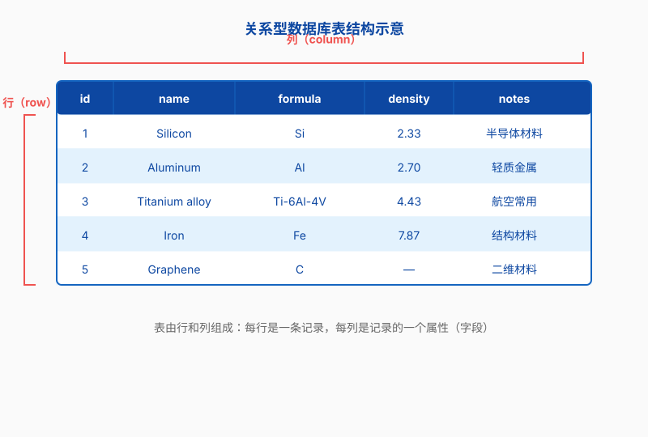
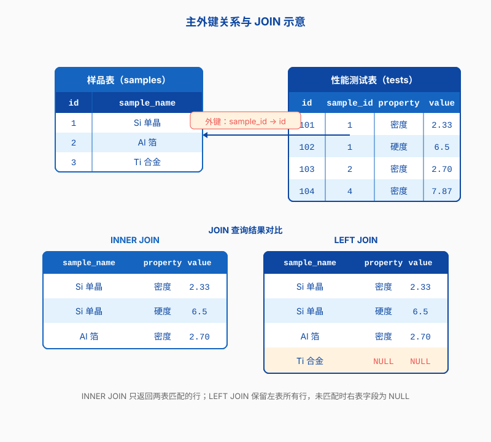

第十章 数据库
前面几章，我们一直在和文件、命令行、容器打交道。到了科研实战里，你会发现除了“怎么跑程序”，还有一个问题同样头疼：数据放哪、怎么管。几十行样品信息可以用 Excel 应付，等到样品上千、测试项目变多、课题组同学都要共享的时候，表格就会开始失控。这一章我们聊聊数据库：它不是什么高深的东西，本质上是把“表格”管得更严密、更可靠，并且让多人、多程序能同时访问。
为什么科研要用数据库？
先别急着学 SQL。我们先用两分钟想想，为什么做科研的人迟早会被数据管理问题缠上。
当 Excel 表格开始失控
几乎每个实验室都经历过这样的场景：师兄毕业前留下一个名为 样品信息_最终版_真的最终版_2024.xlsx 的文件，里面密密麻麻地记着几百个样品的成分、工艺参数和测试结果。你复制一份到自己的电脑上，改了改列名，加了几行新数据；同门也复制了一份，补上了她做的电镜编号。没过多久，课题组里出现了 样品信息_最终版_v2.xlsx、样品信息_修改版_李芳.xlsx、样品信息_合并版.xlsx 好几个版本，谁也不知道哪个是对的。
表格的另一个麻烦是“不好查”。如果你想问：“过去一年里，所有含镍量大于 10% 的样品里，硬度最高的是哪一个？”你很可能要打开好几个文件，手动筛选、排序、复制粘贴。数据量一旦变大，这种方式既慢又容易出错。
数据不是孤岛
科研数据往往不是给一个人看的。你的 Python 脚本要读数据，同门的 Jupyter Notebook 也要读，实验室的网站后台可能还要展示。如果大家都去读各自的 Excel 副本，很快就会 diverge。
数据库的作用就是提供一个“中央账本”。它让多个程序、多个用户同时访问同一份数据，并且保证大家读到的是一致的。你改了某一行，别人立刻就能看到；你跑了一百次查询，结果都一样。这是任何文件共享方案都很难做到的。
可复现性从这里开始
做科研的人都懂， reproducibility（可复现性）是大问题。你的论文里写“从数据库中筛选出 2023 年 1 月到 6 月合成的样品”，如果数据库是结构化的，审稿人只要拿到同样的 SQL 查询，就能跑出同样的样本集。这比“打开 Excel，按经验筛选”要可靠得多。
所以，数据库不是 IT 部门的专利，而是科研基础设施的一部分。学会用它，等于给你的数据上了一道保险。
数据库是什么：从表格说起
如果你觉得“数据库”这个词太抽象，那就从你最熟悉的表格开始理解它。
表、行、列
一个关系型数据库里，最核心的东西就是“表”（table）。表看起来像 Excel 工作表：一行是一条记录，一列是一个字段。比如一个记录材料样品的表，可能长这样：
| sample_id | name | composition_type | synthesis_date | researcher |
|---|---|---|---|---|
| 1 | S001 | Ni-Fe 合金 | 2024-03-12 | 王磊 |
| 2 | S002 | Ti-Al 合金 | 2024-03-15 | 李芳 |
| 3 | S003 | Ni-Fe 合金 | 2024-04-02 | 王磊 |
每一行代表一个样品，每一列代表样品的一种属性。sample_id 是一个编号，用来唯一区分这一行；其他列则描述了这个样品的名字、成分类型、合成日期和负责人。
关系型数据库的核心想法
关系型数据库（Relational Database）的“关系”二字，说的不是样品之间的物理关系，而是表与表之间的逻辑关系。你可以把数据拆成多张表，通过某些共同的字段把它们联系起来。比如样品的基本信息放一张表，化学成分放另一张表，力学性能测试结果再放一张表。需要的时候，用 SQL 把它们“拼”起来看。
这种设计有两个好处。第一，避免重复。样品的名字和合成日期只在基本信息表里存一次，不会因为每次测试都重复录入。第二，保持一致。如果某个样品的负责人写错了，只需要改一个地方，所有关联的查询结果都会更新。

常见的数据库类型
数据库有很多种。我们最常用的是关系型数据库，比如 SQLite、PostgreSQL、MySQL。它们用表来组织数据，用 SQL 来查询，适合结构清晰、关系明确的科研数据。
另一类是 NoSQL 数据库，比如 MongoDB、Redis。它们不拘泥于表格，适合存储文档、键值对、图结构等更灵活的数据。如果你的数据本身没有固定格式，或者访问量极高，可以考虑 NoSQL。但对大多数材料、AI 科研场景来说，关系型数据库已经够用，也是我们先要掌握的东西。
SQLite：一个人的数据库
学数据库，最好从一个不需要服务器、不需要配置的东西开始。SQLite 就是这样一个选择。
一个文件就是一个库
SQLite 最大的特点是把整个数据库存在一个文件里。你不需要启动服务，不需要配置用户权限，只要有一个 .db 文件，就能用 sqlite3 命令读写它。这让它非常适合个人项目、本地脚本、Jupyter Notebook 实验，或者作为小程序的嵌入式数据库。
当然，它也有局限。因为它不是网络服务，所以不适合多人同时写入；因为它把所有东西放在一个文件里，所以也不适合特别大的数据量。但对我们“先学会数据库”这个目标来说，SQLite 是完美的起点。
安装与进入命令行
在 Ubuntu/Debian 上安装 SQLite 很简单：
student@workstation:~$ sudo apt update
student@workstation:~$ sudo apt install sqlite3
装好后，用 sqlite3 加上文件名就能进入交互命令行。如果文件不存在，SQLite 会自动创建它：
student@workstation:~$ sqlite3 lab_samples.db
SQLite version 3.45.0 2024-01-15 17:01:13
Enter ".help" for usage hints.
sqlite>
光标停在 sqlite> 后面，说明你已经连上数据库了。接下来就可以建表、插数据、做查询。
创建第一张表
我们建一张记录样品基本信息的表。注意 SQL 语句末尾要加分号：
sqlite> CREATE TABLE samples (
sample_id INTEGER PRIMARY KEY AUTOINCREMENT,
name TEXT NOT NULL,
composition_type TEXT,
synthesis_date TEXT,
researcher TEXT
);
这里每一列都声明了类型。INTEGER 是整数，TEXT 是文本。PRIMARY KEY AUTOINCREMENT 表示 sample_id 会自动递增，不用我们手动指定。NOT NULL 表示 name 不能为空。SQLite 的类型比较宽松，但养成声明类型的习惯，以后迁移到 PostgreSQL 会更顺利。
插入与查询样品信息
往表里插几条虚构的样品数据：
sqlite> INSERT INTO samples (name, composition_type, synthesis_date, researcher)
VALUES ('S001', 'Ni-Fe 合金', '2024-03-12', '王磊');
sqlite> INSERT INTO samples (name, composition_type, synthesis_date, researcher)
VALUES ('S002', 'Ti-Al 合金', '2024-03-15', '李芳');
sqlite> INSERT INTO samples (name, composition_type, synthesis_date, researcher)
VALUES ('S003', 'Ni-Fe 合金', '2024-04-02', '王磊');
查一下全部数据：
sqlite> SELECT * FROM samples;
1|S001|Ni-Fe 合金|2024-03-12|王磊
2|S002|Ti-Al 合金|2024-03-15|李芳
3|S003|Ni-Fe 合金|2024-04-02|王磊
这里的 * 表示“所有列”。如果只想看名字和负责人，可以指定列：
sqlite> SELECT name, researcher FROM samples;
name|researcher
S001|王磊
S002|李芳
S003|王磊
修改和删除要小心
更新数据用 UPDATE，删除用 DELETE。这两条命令都有一个共同的“坑”：如果你忘了写 WHERE 子句，就会作用于整张表。
sqlite> UPDATE samples SET researcher = '张敏' WHERE sample_id = 2;
sqlite> DELETE FROM samples WHERE sample_id = 3;
上面的命令分别把 sample_id 为 2 的样品负责人改成“张敏”，并删除 sample_id 为 3 的样品。如果漏掉 WHERE sample_id = ...，整张表的负责人都会被改掉，或者所有样品都会被删掉。所以在生产环境里执行 UPDATE 和 DELETE 之前，最好先用同样的 WHERE 条件做一次 SELECT，确认影响范围。
SQL 基础：增删改查
SQL 是关系型数据库的通用语言。不管你后面用 SQLite、PostgreSQL 还是 MySQL，查询数据的基本语法都大同小异。我们把最常用的几条命令走一遍。
SELECT：把数据找出来
SELECT 是你使用频率最高的 SQL 命令。它负责从表里把数据捞出来。你可以指定列、给列起别名、做简单计算。
sqlite> SELECT name AS 样品编号, researcher AS 负责人 FROM samples;
这里的 AS 给列起了一个别名，输出结果的表头会显示“样品编号”和“负责人”，而不是原来的英文名。
WHERE：加条件
只想看某个负责人的样品？用 WHERE：
sqlite> SELECT * FROM samples WHERE researcher = '王磊';
sqlite> SELECT * FROM samples WHERE synthesis_date >= '2024-04-01';
条件可以组合。下面的查询找出 2024 年 4 月以后、成分类型为 Ni-Fe 合金的样品：
sqlite> SELECT * FROM samples
WHERE synthesis_date >= '2024-04-01' AND composition_type = 'Ni-Fe 合金';
WHERE 里还可以用 LIKE 做模糊匹配，用 IN 匹配一组值，用 BETWEEN 匹配范围。这些组合起来，基本能应付日常筛选需求。
排序、去重与分页
查询结果默认按插入顺序排列。用 ORDER BY 可以按某列排序：
sqlite> SELECT * FROM samples ORDER BY synthesis_date DESC;
DESC 表示降序，最新的样品排在最前面；默认是 ASC 升序。
如果只想看有哪些不同的成分类型，用 DISTINCT：
sqlite> SELECT DISTINCT composition_type FROM samples;
数据量很大的时候，可以用 LIMIT 和 OFFSET 分页：
sqlite> SELECT * FROM samples ORDER BY sample_id LIMIT 10 OFFSET 20;
这条语句会跳过前 20 行，再返回 10 行。写脚本批量处理数据时，分页查询能避免一次性加载太多内容。
聚合：数数、求平均
除了列出原始行，SQL 还能直接做统计。假设我们有一张记录硬度测试结果的 measurements 表，常见的聚合函数有 COUNT、AVG、MAX、MIN、SUM。
sqlite> SELECT COUNT(*) FROM samples;
sqlite> SELECT AVG(hardness) FROM measurements;
sqlite> SELECT composition_type, AVG(hardness)
FROM samples JOIN measurements USING (sample_id)
GROUP BY composition_type;
最后一条查询在 SQLite 中演示，把样品表和测试结果表 JOIN 起来，按成分类型分组，计算每类合金的平均硬度。这条语句使用标准 SQL 写法，在 PostgreSQL 中同样可以直接运行。GROUP BY 通常和聚合函数一起用，否则意义不大。
UPDATE 与 DELETE
前面已经见过 UPDATE 和 DELETE。这里再强调一次：永远先写 WHERE，再写 SET 或 DELETE。一个实用的习惯是，先用 SELECT ... WHERE ... 验证条件，确认只影响目标行，再把 SELECT 换成 UPDATE 或 DELETE。
另外，如果你一次要改很多行，可以用 BEGIN 开启一个事务，确认无误后再 COMMIT；如果发现错了，用 ROLLBACK 撤销。SQLite 默认每条语句就是一个事务，但显式控制事务能让你更安心。
表之间的关系与 JOIN
一张表能做的事情有限。真正让数据库强大起来的，是表与表之间的关系，以及把多张表拼起来的能力。
为什么要拆表
假设你直接用一张大表记录所有信息：样品基本信息、每次测试的硬度、每次测试的电镜编号、每次成分分析结果。很快你就会发现，样品名字和合成日期被重复写了无数遍。一旦某个样品的合成日期写错了，你要改很多行；如果某个测试数据被误删，样品的基本信息也没了。
正确的做法是把信息拆开。样品的基本信息单独存一张表，测试结果存另一张表，通过某个共同字段关联。这样既省空间，又不容易出错。
主键与外键
用来唯一标识一行记录的字段叫主键（Primary Key）。在我们的例子里，sample_id 就是主键。它不能重复，也不能为空。一个样品不管有多少条测试记录，sample_id 永远是它的“身份证号”。
外键（Foreign Key）则是指向另一张表主键的字段。比如 measurements 表里可以有一列 sample_id，它的值必须对应 samples 表里某个真实存在的 sample_id。外键约束能防止你插入一条“属于不存在样品”的测试记录，但SQLite 默认并不启用外键检查，需要手动开启。

INNER JOIN：只保留匹配的行
JOIN 的作用就是把两张表按某个条件拼成一张大表。最常用的是 INNER JOIN，它只保留两张表都能匹配上的行。
sqlite> SELECT samples.name, measurements.test_date, measurements.hardness
FROM samples
INNER JOIN measurements ON samples.sample_id = measurements.sample_id;
这条查询会返回每个有测试记录的样品名字、测试日期和硬度。如果某个样品还没有测试记录，它就不会出现在结果里。
LEFT JOIN：保留左边的所有行
有时候你想保留左边表的所有行，哪怕右边没有匹配。这时用 LEFT JOIN：
sqlite> SELECT samples.name, measurements.hardness
FROM samples
LEFT JOIN measurements ON samples.sample_id = measurements.sample_id;
结果里会包含所有样品。没有测试记录的样品，hardness 那一列会显示 NULL。这在检查“哪些样品还没做测试”时特别有用。
一个材料成分与性能的实例
我们把这个概念落到具体例子上。先建一张测试结果表，并通过外键关联到样品表。注意要先开启外键检查，否则即使声明了 FOREIGN KEY 也不会生效：
sqlite> PRAGMA foreign_keys = ON;
sqlite> CREATE TABLE measurements (
measurement_id INTEGER PRIMARY KEY AUTOINCREMENT,
sample_id INTEGER,
test_date TEXT,
hardness REAL,
FOREIGN KEY (sample_id) REFERENCES samples(sample_id)
);
插入几条测试数据：
sqlite> INSERT INTO measurements (sample_id, test_date, hardness) VALUES (1, '2024-03-20', 285.5);
sqlite> INSERT INTO measurements (sample_id, test_date, hardness) VALUES (1, '2024-03-21', 290.0);
sqlite> INSERT INTO measurements (sample_id, test_date, hardness) VALUES (2, '2024-03-22', 310.2);
现在问：“每个样品的平均硬度是多少？”
sqlite> SELECT samples.name, AVG(measurements.hardness) AS avg_hardness
FROM samples
LEFT JOIN measurements ON samples.sample_id = measurements.sample_id
GROUP BY samples.sample_id, samples.name;
结果把基本信息和性能数据自然地关联在了一起，而原始数据仍然分散在各自的表里，方便维护。
PostgreSQL：多人共享的数据库
SQLite 适合一个人用，但课题组的数据通常需要多人共享。这时候就该请出 PostgreSQL 了。它是一个功能完善、开源免费的关系型数据库，支持多用户、网络访问、复杂查询和事务，是科研和工业界都很常用的选择。
安装 PostgreSQL
在 Ubuntu/Debian 上，用 apt 安装即可：
student@workstation:~$ sudo apt update
student@workstation:~$ sudo apt install postgresql postgresql-contrib
安装完成后，PostgreSQL 会自动创建一个名为 postgres 的系统用户，以及一个同名的数据库超级用户。日常管理数据库，我们通常通过这个超级用户登录。
切换到 postgres 用户
用 sudo -u postgres psql 进入 PostgreSQL 的命令行。这条命令的意思是以 postgres 用户的身份运行 psql：
student@workstation:~$ sudo -u postgres psql
psql (16.2)
Type "help" for help.
postgres=#
提示符变成 postgres=#，说明你已经以超级用户身份连上了默认的 postgres 数据库。
创建数据库与用户
我们为课题组创建一个名为 matlab_db 的数据库，以及一个普通用户 lab_app：
postgres=# CREATE DATABASE matlab_db;
CREATE DATABASE
postgres=# CREATE USER lab_app WITH PASSWORD 'LabPass2024!';
CREATE ROLE
postgres=# ALTER DATABASE matlab_db OWNER TO lab_app;
ALTER DATABASE
注意，数据库名、用户名和密码都是虚构的示例，实际使用时请换成你自己课题组的命名。
建表与授权
切换到新数据库，建一张和 SQLite 类似的样品表：
postgres=# \c matlab_db
You are now connected to database "matlab_db" as user "postgres".
matlab_db=# CREATE TABLE samples (
sample_id SERIAL PRIMARY KEY,
name VARCHAR(32) NOT NULL,
composition_type VARCHAR(64),
synthesis_date DATE,
researcher VARCHAR(32)
);
PostgreSQL 的语法和 SQLite 略有不同。比如自增主键用 SERIAL，日期类型用 DATE，字符串用 VARCHAR(n)。这些差异在迁移时需要注意。
建好表后，给 lab_app 授予读写权限：
matlab_db=# GRANT ALL PRIVILEGES ON TABLE samples TO lab_app;
matlab_db=# GRANT USAGE, SELECT ON SEQUENCE samples_sample_id_seq TO lab_app;
第二条命令允许 lab_app 使用自增序列，否则插入数据时会报权限错误。
远程连接配置
默认情况下，PostgreSQL 只监听本机地址。如果你希望实验室其他同学从自己的电脑连接，需要修改两个配置文件。
修改监听地址
打开 postgresql.conf，找到 listen_addresses 这一行：
student@workstation:~$ sudo nano /etc/postgresql/16/main/postgresql.conf
把它的值改成 '*'，表示监听所有网络接口：
listen_addresses = '*'这里的 16 是 PostgreSQL 主版本号，实际路径可能因版本不同而变化。
配置访问控制
然后编辑 pg_hba.conf，控制哪些 IP 可以用什么方式登录：
student@workstation:~$ sudo nano /etc/postgresql/16/main/pg_hba.conf
在文件末尾添加一行，允许实验室内网使用密码认证：
host matlab_db lab_app 192.168.1.0/24 scram-sha-256改完后重启 PostgreSQL 服务：
student@workstation:~$ sudo systemctl restart postgresql
如果你已经看过第九章 Docker，也可以快速用 docker run postgres:15 起一个测试数据库，适合本地开发时不想改动系统配置的场景。不过生产数据还是建议用系统包安装，方便备份和维护。
安全提示
把数据库暴露到网络上是有风险的。实验室内部使用，最好只开放内网 IP；如果必须远程访问，优先考虑通过 SSH 隧道或 VPN 连接，而不是直接把数据库端口暴露到公网。
另外，给应用单独的数据库用户，而不是用 postgres 超级用户跑程序；只授予必要的权限；密码要足够复杂；定期做备份。这些基本习惯能避免很多麻烦。
从 Python 操作数据库
命令行适合管理和调试，但真正处理科研数据时，我们多半会用 Python。Python 标准库自带 sqlite3，连接 PostgreSQL 则需要第三方库 psycopg2。
用 sqlite3 读写本地库
下面是一段 Python 脚本，演示如何连接 SQLite、插入数据并查询。把它保存为 .py 文件后再运行：
import sqlite3
conn = sqlite3.connect("lab_samples.db")
cur = conn.cursor()
# 插入一行新样品
cur.execute(
"INSERT INTO samples (name, composition_type, synthesis_date, researcher) "
"VALUES (?, ?, ?, ?)",
("S004", "Cu-Zn 合金", "2024-05-10", "陈静"),
)
conn.commit()
# 查询王磊负责的所有样品
cur.execute("SELECT * FROM samples WHERE researcher = ?", ("王磊",))
for row in cur.fetchall():
print(row)
cur.close()
conn.close()
注意 ? 占位符的使用方式。把变量作为元组传给 execute，而不是拼接到字符串里，这是防止 SQL 注入的基本做法。
用 psycopg2 连接 PostgreSQL
连接 PostgreSQL 之前，先安装 psycopg2-binary：
student@workstation:~$ pip install psycopg2-binary
然后写一段类似的 Python 脚本。PostgreSQL 的占位符是 %s，而不是 ?：
import psycopg2
conn = psycopg2.connect(
host="localhost",
database="matlab_db",
user="lab_app",
password="LabPass2024!",
)
cur = conn.cursor()
cur.execute(
"INSERT INTO samples (name, composition_type, synthesis_date, researcher) "
"VALUES (%s, %s, %s, %s)",
("S005", "Al-Si 合金", "2024-05-12", "李芳"),
)
conn.commit()
cur.execute("SELECT * FROM samples WHERE researcher = %s", ("李芳",))
for row in cur.fetchall():
print(row)
cur.close()
conn.close()
真实项目里，密码不要直接写在代码里，可以用环境变量或配置文件读取。第八章我们讲过配置文件和环境变量的基本思路，这里同样适用。
pandas.read_sql：一行代码拿到 DataFrame
做数据分析的人，十有八九会把查询结果直接丢进 pandas。如果你的环境里还没有安装 pandas，可以先运行 pip install pandas。read_sql 可以把 SQL 查询结果转成 DataFrame，省去了手动遍历游标的麻烦。下面是一段 Python 脚本示例：
import pandas as pd
import sqlite3
conn = sqlite3.connect("lab_samples.db")
df = pd.read_sql("SELECT * FROM samples", conn)
print(df.head())
conn.close()
换成 PostgreSQL 也很简单，只要传入 psycopg2 的连接对象。同样作为 Python 脚本运行：
import pandas as pd
import psycopg2
conn = psycopg2.connect(
host="localhost",
database="matlab_db",
user="lab_app",
password="LabPass2024!",
)
df = pd.read_sql("SELECT * FROM samples", conn)
print(df.head())
conn.close()
对材料、AI 方向的研究者来说，这种“数据库 + pandas”的组合是日常工作的标配。
批量导入 CSV 实验数据
实验室里经常有从仪器导出的 CSV 文件，比如一批硬度测试结果。与其一行行手写 INSERT，不如用 Python 批量导入。假设有一个 samples_2024.csv，内容大概是这样：
name,composition_type,synthesis_date,researcher
S006,Mg-Al 合金,2024-06-01,王磊
S007,Ni-Fe 合金,2024-06-03,张敏
S008,Ti-Al 合金,2024-06-05,陈静用 Python 的 csv 模块和 sqlite3 的 executemany 批量插入。下面是一段完整的 Python 脚本：
import csv
import sqlite3
conn = sqlite3.connect("lab_samples.db")
cur = conn.cursor()
with open("samples_2024.csv", newline="", encoding="utf-8") as f:
reader = csv.DictReader(f)
rows = [
(row["name"], row["composition_type"], row["synthesis_date"], row["researcher"])
for row in reader
]
cur.executemany(
"INSERT INTO samples (name, composition_type, synthesis_date, researcher) "
"VALUES (?, ?, ?, ?)",
rows,
)
conn.commit()
cur.close()
conn.close()
如果是 PostgreSQL，把占位符改成 %s，或者用 COPY 命令直接导入 CSV，速度会更快。COPY 适合数据量很大的场景，但要求 CSV 格式和表结构严格对应。
备份、迁移与选型建议
数据一旦进库，备份就成了头等大事。没有备份的数据库，就像没有保存的论文——随时可能归零。
SQLite 备份：复制不如 .backup
因为 SQLite 只有一个文件，最简单的备份就是复制这个文件。但直接复制时，如果正好有程序在写入，可能会得到一份不一致的备份。SQLite 提供了 .backup 命令，能在不锁死数据库的情况下生成一致性副本：
student@workstation:~$ sqlite3 lab_samples.db ".backup lab_samples_2024-07-12.db"
也可以用 .dump 导出成 SQL 脚本，方便迁移到其他数据库：
student@workstation:~$ sqlite3 lab_samples.db ".dump" > lab_samples.sql
PostgreSQL 备份：pg_dump
PostgreSQL 的备份工具是 pg_dump。它可以导出整个数据库或某张表的结构和数据：
student@workstation:~$ pg_dump -U lab_app -h localhost matlab_db > matlab_db_backup.sql
恢复时，需要先创建目标库，再用 psql 执行 SQL 文件：
student@workstation:~$ createdb -U lab_app -h localhost matlab_db_restore
student@workstation:~$ psql -U lab_app -h localhost -d matlab_db_restore -f matlab_db_backup.sql
如果 PostgreSQL 使用密码认证，pg_dump 和 psql 都会提示输入密码。你也可以通过设置 PGPASSWORD 环境变量、配置 ~/.pgpass 文件（注意将文件权限设为 600，避免密码被其他用户读取），或者把本地连接改成 trust/peer 认证来避免每次手动输入。注意：生产环境不要滥用 trust 认证，尽量使用密码或更安全的认证方式。
对于大型数据库，可以考虑 pg_dump 的自定义格式和并行备份；对于需要持续备份的场景，可以研究 PostgreSQL 的流复制和连续归档。日常科研场景里，定期用 pg_dump 导出已经足够。
迁移的注意事项
从 SQLite 迁移到 PostgreSQL 时，有一些常见的“坑”需要注意：
- 数据类型不完全一样。SQLite 的
INTEGER和 PostgreSQL 的INTEGER大致对应，但自增主键要用SERIAL或GENERATED ALWAYS AS IDENTITY。 - 占位符不同。SQLite 用
?，PostgreSQL 用%s。 - SQLite 对类型检查较宽松，PostgreSQL 更严格。迁移前最好清理一遍数据，尤其是日期格式和空值。
- 字符串连接、日期函数、随机数函数在两个数据库里写法可能不同，查询语句需要适当调整。
如果数据量不大，最稳妥的做法是先用 .dump 导出，再写脚本逐行插入 PostgreSQL；或者用 pandas 读 SQLite、写 PostgreSQL，简单直接。数据量较大或表结构复杂时，也可以考虑 pgloader 这类专用迁移工具，它能自动处理类型映射和索引转换。
什么时候选什么数据库
最后简单说说选型。没有最好的数据库，只有最适合当前场景的数据库。
如果你只是一个人做实验、写脚本、跑 Notebook，数据量在百万行以内，SQLite 通常就够了。它零配置、便携，一个文件就能带走。
如果你要搭建实验室共享数据库，或者要跑 Web 服务、多人同时读写，PostgreSQL 是更稳妥的选择。它稳定、功能丰富、社区活跃，而且有完善的权限管理。
如果数据格式非常灵活，比如要存大量非结构化的 JSON 文档，可以考虑 MongoDB 等 NoSQL 数据库。如果数据主要是日志、时序数据，也有专门的时序数据库。
下一章我们要聊的是 DuckDB：一个近年来很受数据分析领域欢迎的嵌入式数据库。它和 SQLite 一样轻便，但针对大规模分析查询做了优化，和 pandas 的配合也非常顺手。